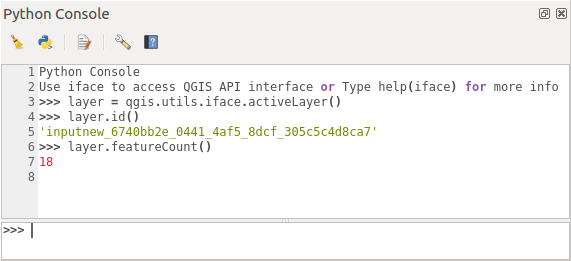

Moduł 2 - QGIS Wprowadzenie#
Co to jest QGIS?#
W ramach dzisiejszego wykładu zapoznamy się z głównym i najważniejszym elementem naszego przedmiotu Programowanie w GIS. Jako, że programowanie już było, czas na dodanie do niego GISu.
Programować będziemy w oprogramowaniu QGIS3 (dostępne na: https://www.qgis.org/pl/site/)
QGIS to środowisko Open Source systemu informacji przestrzennej, które dzięki swojej otwartości jest całkowicie modyfikowalne - i to w Pythonie.
Należy pobrać odpowiednią dla naszego systemu wersję (32-bit lub 64-bit) i zainstalować zgodnie z poleceniami instalatora. Należy upewnić się, że mamy zainstalowane oba narzędzia z poniższego obrazka.

Możemy sprawdzić czy QGIS działa:
Przykładowe zastosowania Pythona w QGIS#
Python wprowadzony został w QGIS już w wersji 0.9 (obecnie mamy 3.36 - od 3 obsługuje Python 3).
QGIS udostępnia szereg narzędzi przestrzennych, które możemy wykorzystać wedle własnego uznania by rozwiązywać nasze problemy.
Przykładowo: możemy wykorzystać metody analiz przestrzennych - przecięcie, wybieranie atrybutów przez lokalizację łącznie z innymi bilbiotekami Pythona, aby stworzyć własny model klasyfikacji zdjęć lotniczych. Praca ta będzie o wiele łatwiejsza ze względu na georeferencję, którą QGIS ułatwia.
Inny przykład: możemy wykorzystać QGISa i jego możliwości wizualizacji do stworzenia narzędzia do symulacji funkcjonowania miast - ładować dane, obliczać przepływy ludności, tworzyć mapy według własnej wizji.
Programowanie umożliwia rozwinięcie możliwości QGISa do zadań, które z obecnie dostępnymi narzędziami nie byłyby możliwe lub byłyby bardzo żmudne.
Programowanie w QGIS#
QGIS umożliwia programowanie na 3 sposoby:
- Skryptowanie w konsoli
- Tworzenie pluginów
- Tworzenie własnych aplikacji z wykorzystaniem komponentów QGISa
Konsola#
Umożliwia pisanie skryptów (nie funkcjonalnych wtyczek, których zachowanie możemy dowolnie modyfikować) wewnątrz QGISa. Możemy pracować na obecnie załadowanych danych lub oprogramować ładowanie i szybkie przetwarzanie danych (przydatne gdy mamy do przetworzenia wiele danych, przykładowo przycięcie 1000 warstw do pewnego obszaru).
W otwartej konsoli możemy pisać dowolny kod Pythona jak również mieć dostęp do specjalnych funkcji QGISa
Możliwe jest pisanie kodu i wywoływanie zmiennych w oknie tymaczasowym lub pisanie pełnych skryptów, które możemy uruchamiać wielokrotnie.
Pluginy#
Pluginy służą do rozszerzania funkcjonalności QGIS, tworzenia nowych narzędzi. Takie narzędzia są właśnie tworzone i udostępniane przez społeczność QGIS za pomocą repozytorium wtyczek (odpowiednik Toolbox w ArcGIS).
Przygotowanie pluginu do QGISa wymaga stworzenia:
- modułów - jak w bibliotece progamistycznej
- interfejsu graficznego użytkownika
Poniżej przykładowa wtyczka:
Każdy plugin musi zawierać ustalone pliki w folderze żeby został wczytany. Są to elementy, jakie musi zawierać moduł Python, aby został przez interpreter odnaleziony, a wiec plik \(__init__.py\) oraz plik interfejsu oraz kodu wykonywalnego:
- $__init__.py$ - inicjalizacyjny (nawet jeśli pusty)
- form.py - z interfejsem graficznym
- plik z kodem wykonywalnym
Powinien być dołączony plik z metadanymi \(metadata.txt\)
Własne aplikacje#
Możliwe jest używanie komponentów QGISa jak bilbioteki programistycznej i używanie jego narzędzi we własnych kodach, aplikacjach i zastosowaniach.
Odbywa się to po prostu poprzez import bilbiotek qgisa, na przykład:
from qgis.core import *
QgsApplication.setPrefixPath("/path/to/qgis/installation", True)
qgs = QgsApplication([], False)
qgis.initQgis()
#kod tutaj
qgis.exitQgis()
---------------------------------------------------------------------------
ModuleNotFoundError Traceback (most recent call last)
Input In [1], in <cell line: 1>()
----> 1 from qgis.core import *
2 QgsApplication.setPrefixPath("/path/to/qgis/installation", True)
3 qgs = QgsApplication([], False)
ModuleNotFoundError: No module named 'qgis'
API QGISa#
Aby pracować z QGIS w Python musimy zapoznać się z jego API
API
API to Application Programming Interface, czyli interfejs programistyczny aplikacji. To zestaw ściśle określonych reguł i poleceń (wraz z opisem), który informuje w jaki sposób moduły oprogramowania komunikują się ze sobą, jakie mają funkcjonalności. Interfejs pozwala na dostęp do nich i na ich wykorzystanie.
API udostępnia klasy wraz z metodami, funkcje, typy danych (w końcu to też klasy) oraz protokoły komunikacyjne.
QGIS API
Dostępne jest pod: https://qgis.org/api/
Oczywiście wersji QGIS jest dużo i różnią się między sobą (zwłacza API), dlatego zawsze musimy odnaleźć dokumentację dla swojej wersji.
Należy pamiętać, że wciąż piszemy w języku obiektowym. Wszystko zatem jest w QGISie obiektem - projekty, warstwy, dane rastrowe, dane wektorowe, każdy punkty, linia i wielokąt. Każdy ma swoje atrybuty i parametry - wszystko opisane jest w API.
API zaprojektowane jest zgodnie z paradygmatami programowania obiektowego - klasy są heremetyczne, istnieją klasy abstrakcyjne i dziedziczące. Funkcje są polimorficzne. Spójrzmy na przykładowy fragment relacji z QgsAPI:
Ten (nieco niskiej rozdzielczości) obraz przedstawia relację pomiędzy warstwami danych QGISa a klasami abstrakcyjnymi.
W QGISie znajdziemy 4 rodzaje warstw -
Mesh,
Plugin,
Raster,
Vector.
O ile dwie pierwsze nas nie interesują (mają dośc specyficzne zastosowania) to z dwiema ostatnimi będziemy dużo pracować. Są to odpowiednio warstwa danych rastrowych oraz wektorowych.
Każda klasa warstwy dziedziczy po abstrakcyjnej klasie - QgsMapLayer, czyli abstrakcji warstwy danych w QGISie. Zawiera ona cechy i metody wspólne dla każdej warstwy. Ta z kolei dziedziczy po bardziej abstrakcyjnej klasie QObject.
QObject - QGIS jest zbudowany na podstawie oprogramowania Qt, które służy do tworzenia intefejsów graficznych (GUI - Graphical User Interface) dla Pythona (do tego jest nam potrzebny QtDesigner pokazany na początku wykładu, będziemy takie interfejsy projektować).
QObject to element tej biblioteki, który przechowuje dowolny obiekt zaprojektowanego interfejsu. Posiada on takie atrybuty jak:
miejsce w pamięci
nazwa
Oraz metody jak:
uruchom inny obiekt połączony
QgsMapLayer - to już obiekt QGISa, abstrakcja warstwy danych. Posiada takie atrybuty jak:
Stan warstwy (usunięta, obecna)
Oraz metody jak:
Określ układ odniesienia
Określ zakres przetrzenny
...
QgsVectorLayer - to warstwa przechowujące dane wektorowe (i jedyna z tych 3, którą tak naprawdę w QGIS obsługujemy). Jako, że jest zaprojektowana do pracy z wektorami, to określa metody i atrybuty typowe dla tego typu danych (oczywiście dziedziczy wszystkie powyższe):
Stylizacja
Czy jest edytowalna
i metody:
zmień atrybuty
zmień geometrię
...
Od teraz będziemy śledzić najważniejsze komponenty API QGIS i będziemy przyglądać się jego funkcjonalnościom.
Pierwszy kod w QGIS#
Na pierwszy ogień:
Projekty - klasa QgsProject#
Czyli ładowanie projektów. Czasem istnieje potrzeba podczytania całego projektu.
Klasa QgsProject umożliwia ładowanie i zapisywanie projektów - plików *.qgs
from qgis.core import QgsProject #importujemy tylko klasę QgsProject
project = QgsProject.instance() #tworzymy instancję projektu. W QGIS3 już nie jest to obowiązkowe
#project jest pusty
project.read("sciezka_do_pliku") #otwieramy projekt
project.write() #zapisujemy do tego samego pliku
project.write("sciezka_do_zapisu") #zapisujemy projekt do nowego pliku
---------------------------------------------------------------------------
ModuleNotFoundError Traceback (most recent call last)
Input In [1], in <cell line: 1>()
----> 1 from qgis.core import QgsProject #importujemy tylko klasę QgsProject
2 project = QgsProject.instance() #tworzymy instancję projektu. W QGIS3 już nie jest to obowiązkowe
3 #project jest pusty
ModuleNotFoundError: No module named 'qgis'
Zatem otwieranie i zapisywanie projektów odbywa się za pomocą polecenia \(read\) oraz \(write\)
Inne moduły API QGIS#
- qgis.core zawiera podstawowe funkcjonalności QGISa
- qgis.gui zawiera widgety GUI - czyli okna, paski, ikonki i pozwala na ich edycję i wykorzystanie we własnych pluginach
- qgis.analysis udostępnia narzędzia analiz przestrzennych
- MapComposer to klasa która pozwala na tworzenie własnych kompozycji mapowych i wydrków
- Network Analyst udostępnia narzędzia analiz sieciowych/grafowych
Import warstwy wektorowej#
from qgis.core import QgsVectorLayer #importujemy QgsVectorLayer, klasę warstw wektorowych
vlayer = QgsVectorLayer("sciezka_do_warstwy","Nazwa warstwy","ogr") #ogr to moduł obsługujący warstwy wektorowe, nazwa wyświetlana jest wewnątrz QGIS
Po takim podczytaniu warstwa nie wyświetli się, dlatego też by ją dodać należy ją dodać do mapy. Odbywa się to za pomocą instancji \(iface\).
Instancja iface - czyli interfejs, to interfejs graficzny, który widzimy, gdy korzystamy z QGISa.
Aby od razu załadować warstwę i dodać warstwę do interfejsu należy zastosować polecenie:
vlayer = iface.addVectorLayer("sciezka_do_warstwy","Nazwa warstwy","ogr")
Import warstwy rastrowej#
rlayer = QgsRasterLayer("sciezka_do_pliku","Nazwa")
LUB:
iface.addRasterLayer("sciekza_do_liku","Nazwa")
Warstwy w QgsProject#
Jeśli pracujemy w QgsProject, wtedy możemy dodać warstwy z pamięci:
QgsProject.instance().addMapLayer(rlayer) #dodwanie
QgsProject.instance().removeMapLayer(rlayer.id()) #usuwanie
QgsProject.instance().mapLayers() #lista warstw
Obsługa warstw danych#
Usuwanie warstw#
projekt.removeMapLayer(vlayer.id())
Lista warstw#
projekt.mapLayers()
Wybór aktywnej warstwy#
layer = iface.activeLayer()
Biblioteka OS#
Do pracy z scieżkami plików przyda nam się bilioteka os - pozwala ona na przeglądanie struktury plików w naszym systemie lub na serwerze. Często istnieje potrzeba ładowania kolejno różnych warstw z różnych ścieżek. Dzięki tej bibliotece jesteśmy to w stanie zautomatyzować.
Najbardziej przydatne polecenia \(walk, join\)
import os
sciezka = 'folder'
plik = 'plik.shp'
os.path.join(sciezka,podsciezka,plik)
'D:\\folder\\folder\\plik.shp'
pelna = os.path.join(sciezka,plik)
print(pelna)
folder\plik.shp
os.path.basename(pelna) #zwraca nazwe pliku
'plik.shp'
os.path.abspath(pelna) #ścieżka absolutna
'D:\\GitHub\\PwGIS2024\\folder\\plik.shp'
os.path.dirname(pelna) #ściezka do foldderu
'folder'
Polecenie walk#
for r,d,f in os.walk(r'D:\NE1_50M_SR_W'):
for ff in f:
if '.tif' in ff:
print(os.path.join(r,ff))
D:\NE1_50M_SR_W\NE1_50M_SR_W.tif
for root,directory,filename in os.walk(sciezka):
for ffile in filename:
if '.shp' in ffile:
print(os.path.join(root,ffile))
next(os.walk(sciezka)) #tylko główny folder
---------------------------------------------------------------------------
StopIteration Traceback (most recent call last)
Input In [11], in <cell line: 1>()
----> 1 next(os.walk(sciezka))
StopIteration:
Dodatek do ćwiczeń: Obsługa warstw wektorowych - szczegóły warstwy#
Uzyskiwanie dostępu do danych:
Atrybuty:#
#Przegląd atrybutów
for pole in drogi.fields():
print(pole.name(), pole.typeName())
Obiekty:#
#Pozyskanie obiektów na warstwie
layer.getFeatures() #zwraca iterator, nie listę, można się dopiero przez nią iterować
features = [feature for feature in budynki.getFeatures()][:20]
for obiekt in features:
print(obiekt.id())
for obiekt in features:
print(obiekt.geometry()) #Zwraca klasę geometrii
for obiekt in features:
print(obiekt.geometry().length())
for obiekt in features:
print(obiekt.attributes())
for obiekt in features:
print(obiekt[#nazwa_atrybutu])